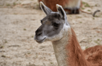

|  |
ZOE
-EDAD:2 años-SEXO: Hembra -ESPECIE: Guanaca -COLOR: Marron Claro -TAMAÑO: Muy Grande -NECESIDADES ESPECIALES: Ninguna |
Zoe es una pequeña guanaca de dos años, de pelaje marron claro y ojos grandes.
HISTORIA:
Zoe nacio en un campo abierto en la Patagonia, donde corria con su madre y otros guanacos. Un dia su madre nacio por cazadores de la zona
y ella se quedo sola. Deambulo por el campo varios dias, buscando a su madre sin saber que hacer. Estaba asustada y hambrienta. Un dia fue encontrada por una familia
en la ruta, tras darle un poco de pan se apiadaron de ella y se la llevaron con ellas. Y nos trajeron a nosotros para buscarles un hogar y darles una familia a quien se la arrebataron.